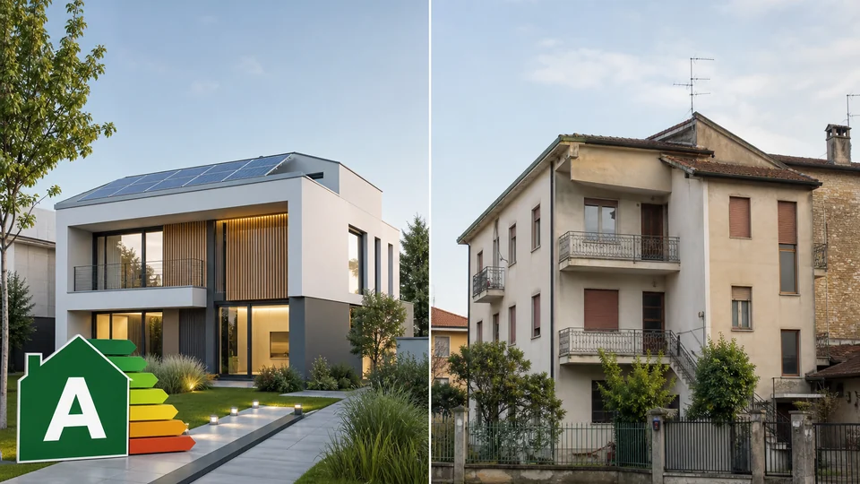

Illustrazioni editoriali Righetto. Dati numerici con fonte nel testo (CRIF, FIAIP, UE, OMI). Aggiornato: 23 giugno 2026.
Cosa può fare Righetto
Il quesito: Vendibilità futura classe energetica — non Tribloc né domanda — quali passi concreti con un'agenzia locale?
- Valutazione comparativa — Stima su comparabili OMI e stock locale — senza listini online (servizio valutazioni)
- Piano commercializzazione — Foto professionali, portali, open house e report settimanale (servizio vendita)
- Preparazione immobile — Home staging leggero e check documenti per accelerare il rogito (servizio vendita)
- Gestione trattativa — Mediazione tra parti su prezzo, tempi e condizioni sospensive (consulenza gratuita)
Mediazione e compenso concordati in sede nel mandato — nessun listino percentuale online. Tel. 049.8843484 · consulenza gratuita.
Per chi è questo articolo
Per proprietari e acquirenti nel Padovano che vogliono capire se la propria casa resterà vendibile entro il 2031 e quanto peseranno APE e posizione sul prezzo.
In sintesi
- La casa resterà vendibile: la Direttiva (UE) 2024/1275 (EPBD) non introduce divieti di vendita per classi basse; il tema è il valore di mercato.
- Due leve decisive: prestazioni energetiche (polarizzazione tra immobili efficienti ed energivori) e microzona — nelle aree più richieste i prezzi tendono a restare stabili o in crescita.
- CRIF (giugno 2025) segnala fino a 700 €/mq di distanza tra classi A–B e F–G in media nazionale su perizie mutuo.
- Esempi dal portafoglio Righetto: LP0286 ad Altichiero (classe C) e LA0317 a Mandria (classe E).
Cosa NON è
- Non è consulenza legale — il recepimento italiano della Direttiva Case Green è in corso.
- Non sostituisce l'approfondimento normativo già pubblicato sul sito.
- Non promette plusvalenze percentuali fisse senza valutazione comparativa sul campo.
Vendibile sì, ma a che prezzo?
La tua casa sarà assolutamente vendibile tra 5 anni. Tuttavia, il suo valore dipenderà molto da due fattori chiave: le prestazioni energetiche dell'immobile — spinte dalle normative europee sulle «case green» — e la posizione geografica. Nelle aree più richieste i prezzi tenderanno a rimanere stabili o in crescita. È la sintesi che traiamo dalla pratica quotidiana in agenzia, incrociata con i dati istituzionali disponibili e con le dinamiche che già oggi vediamo in trattativa a Padova e provincia.
Da Limena operiamo su 101 comuni. Ogni settimana concludiamo compravendite su appartamenti e villette in classe D, E e talvolta G: il mercato non si è bloccato. Cambiano però i tempi di assorbimento, la leva dell'acquirente in negoziazione e il confronto con annunci simili più efficienti nella stessa microzona.
Cosa sta cambiando nel mercato immobiliare
Il Report FIAIP Monitora Italia 2025, elaborato dal Centro Studi FIAIP con ENEA e I-Com e presentato al Senato, ha messo in evidenza per la prima volta in modo sistematico il peso della classe energetica sul valore percepito degli immobili. In parallelo, CRIF Real Estate Services ha analizzato a giugno 2025 una quota rappresentativa di unità oggetto di perizia mutuo in Italia, quantificando divari di prezzo al metro quadro tra immobili «green» (classi A–B) e «brown» (F–G).
Non si tratta di una moda mediatica: in sede di visita e compromesso, l'acquirente padovano chiede sempre più spesso il costo annuo delle utenze, la data dell'ultimo intervento sugli infissi e se il condominio ha in programma lavori sull'involucro. L'APE non è più un foglio da allegare per obbligo: è un parametro di confronto tra due proposte simili in Arcella, Sacrocuore o in campagna.
Direttiva Case Green: cosa significa per il singolo proprietario
La Direttiva (UE) 2024/1275, in vigore dal 28 maggio 2024, fissa obiettivi medi di riduzione del consumo energetico nel residenziale (tra cui −16% entro il 2030 a livello nazionale), non un obbligo per ogni singola unità di raggiungere una classe prefissata entro una scadenza individuale.
In Italia il recepimento era atteso entro il 29 maggio 2026; al 23 giugno 2026 restano applicabili le norme nazionali sull'attestato di prestazione energetica in compravendita e locazione. Per chi vende nel Padovano nel 2026–2031: nessuna «data di scadenza» che renda illegale cedere un immobile in classe G, ma crescente attenzione del mercato su bollette, mutuo e perizia bancaria.
Fake news da sfatare
Non esiste — né è previsto — un divieto di vendere o affittare case in classe energetica bassa dal 2030. Il rischio per chi possiede un immobile energivoro è economico: tempi di vendita più lunghi, richieste di ribasso, perizie più conservative, pool di acquirenti finanziati più stretto. È un tema che affrontiamo spesso in consulenza con i proprietari che ci chiedono se conviene ristrutturare prima della messa in vendita.
Classe energetica e valore: i dati verificabili
Secondo l'analisi CRIF RES aggiornata a giugno 2025, a livello nazionale:
- gli immobili in classe A–B costano in media circa 500 €/mq in più rispetto a quelli in classi intermedie (C–E);
- il divario con le classi F–G si allarga a circa 700 €/mq;
- nei centri urbani lo scarto può superare 1.000 €/mq tra estremi della scala.
Su un appartamento di 90 mq, 700 €/mq equivalgono a 63.000 euro di distanza teorica — prima di considerare piano, stato, box auto e spese condominiali. È un segnale nazionale da usare come bussola, non come prezzo automatico del tuo immobile: serve una valutazione comparativa con annunci venduti e quotazioni OMI della microzona.

Tabella: effetti della classe energetica su prezzo e tempi
La tabella sintetizza tendenze osservate nel mercato nazionale e in agenzia sul Padovano. Le percentuali non sono automaticamente applicabili al singolo caso.
| Classe APE | Effetto tipico su domanda | Mutuo / perizia | Padovano: note operative |
|---|---|---|---|
| A–B | Pool acquirenti ampio; marketing su efficienza | Condizioni spesso favorevoli su mutui green | Premium in centri e nuove costruzioni Limena/Cadoneghe |
| C–D | Segmento intermedio più scambiato | Perizia standard se stato impianti ok | Molte villette ristrutturate Arcella, Altichiero, Mandria |
| E–F | Trattativa su bollette e lavori futuri | Attenzione a spese e capex | Appartamenti anni '70–'80: prezzo d'ingresso se zona forte |
| G | Acquirente investitore o ristrutturatore | Perizia prudente; cash o lavori in budget | Stock campagna e bifamiliari da ripensare |
Il report FIAIP segnala che la polarizzazione tra immobili efficienti e obsoleti tenderà ad accentuarsi con l'avvicinarsi degli obiettivi EPBD. Sul territorio padovano traduciamo questo scenario in scelte concrete: allineare prezzo richiesto, documentazione e messaggio dell'annuncio alla classe energetica reale, senza nascondere costi futuri all'acquirente.
Posizione geografica: spesso pesa più dell'APE
Microzona, servizi, collegamenti e offerta concorrente restano i driver primari. A Padova, Altichiero e Mandria attirano famiglie per verde e tranquillità; Sacrocuore e Arcella per servizi e domanda consolidata; Limena, Vigonza e Albignasego per chi cerca cintura con prezzi spesso inferiori al capoluogo pur restando vicino alla tangenziale.

Dove la domanda resta sostenuta e l'offerta è limitata, un immobile in classe E può assorbirsi in pochi mesi se il prezzo è coerente con gli OMI e con gli ultimi rogiti comparabili. In zone periferiche o con eccesso di stock simile, invece, anche una classe C può richiedere mesi se il prezzo iniziale è sopra mercato. Per approfondire i rioni: quartieri Padova 2026 e schede zona del sito.
La Banca d'Italia e l'ISTAT descrivono un mercato residenziale italiano con andamenti differenziati per area nel 2025–2026. Il Veneto resta tra le regioni con scambi attivi; Padova città e hinterland confermano transazioni regolari (vedi dati compravendite Q1 Agenzia Entrate).
Orizzonte 2031: cosa aspettarsi
Entro cinque anni possiamo ragionevolmente prevedere:
- APE più visibile in annunci, perizie e comparazioni online tra immobili simili.
- Condomini F/G sotto pressione per interventi sull'involucro, senza bloccare la vendita della singola unità.
- Microzone servite (scuole, tangenziale, verde) che mantengono o aumentano attrattività, come suggeriscono le serie OMI semestrali.
- Incentivi alla riqualificazione — vedi bonus edilizi 2026 — utili solo dove il conto economico chiude.
Ristrutturare prima di vendere non è obbligatorio. Conviene quando il costo dell'intervento è inferiore al maggiore prezzo ottenibile e al tempo risparmiato; altrimenti è più razionale vendere trasparentemente sullo stato attuale e lasciare al compratore le scelte di efficientamento, eventualmente con detrazioni a suo nome.
Due esempi dal portafoglio Righetto
Per rendere concreti i due fattori — energia e posizione — due proposte attive a giugno 2026.
Villetta LP0286 — Altichiero

€365.000 · circa 230 mq · 8 locali · ristrutturata · classe C (IPE 122,39 kWh/m²a) · garage e giardino · Altichiero.
Profilo «pronto abitare» con metrature generose: unisce quartiere residenziale richiesto (Padova nord, tangenziale, servizi) a prestazione energetica intermedia-alta dopo ristrutturazione. Per l'orizzonte 2031 l'acquirente valuta assenza cantieri, spese prevedibili e confronto con villette F/G da ripensare nella stessa area.
Quadrilocale LA0317 — Mandria

€200.000 · circa 90 mq · 5 locali · secondo piano · ristrutturato · classe E (IPE 112,53 kWh/m²a) · Mandria.
Qui domina la posizione: zona tranquilla del comune di Padova, domanda di famiglie e coppie. Ristrutturato per ingresso rapido; la classe E spinge a simulare bollette e interventi leggeri (infissi, pompa di calore) rispetto a un A/B in centro a prezzo superiore. Resta vendibile — la domanda locale lo conferma —; il prezzo finale dipenderà dal confronto con comparabili in Sacrocuore e dintorni.
LP0286 e LA0317 mostrano la stessa regola: entrambi vendibili, con leve diverse. La villetta punta su metrature, pertinenze ed energia post-intervento; l'appartamento su prezzo di ingresso, quartiere e finiture, con APE migliorabile. Nessuna scheda garantisce plusvalenza: servono visita, documenti e strategia di prezzo fondata su comparabili.
Tempi di vendita nel Padovano
In agenzia osserviamo che l'efficienza energetica incide sui tempi soprattutto quando due immobili simili competono nello stesso quartiere. Un bilocale in zona universitaria in classe mediocre può chiudersi in settimane se il prezzo riflette il canone da locazione studenti; una villa classe G in campagna può restare mesi in vetrina se la domanda è di nicchia.
Fattori che contano quanto l'APE: allineamento prezzo/OMI, qualità foto e planimetrie, visibilità dell'attestato in annuncio, assenza di sorprese in perizia mutuo. Per il tema mutuo: APE e acquisto e simulazione.
Checklist per il proprietario che vende
- Leggere l'APE e confrontarlo con comparabili venduti, non solo in annuncio.
- Verificare microzona con OMI e articoli zona del sito.
- Stimare costi di efficientamento vs beneficio atteso — con tecnico abilitato.
- Scegliere timing: vendere ora con messaggio trasparente, o intervenire con bonus se il conto chiude.
- Preparare pacchetto documenti: APE, planimetria, libretti impianti (checklist vendita).
Checklist per l'acquirente
- Simulare spesa energetica annua oltre al prezzo di acquisto.
- Chiedere preventivi per salto di classe se l'immobile è E/F/G.
- Verificare delibere condominiali su lavori energetici.
- Valutare mutuo green solo se l'unità rientra nei criteri bancari.
- Considerare immobili «brown» come opportunità se il capex è nel budget — con occhio ai bonus.
Sintesi
Tra cinque anni la compravendita resterà possibile per quasi tutte le classi energetiche. Il valore seguirà due binari: quanto costa vivere lì (bollette, mutuo, condominio) e dove si trova (domanda, servizi, concorrenza). CRIF quantifica a livello nazionale distanze fino a 700 €/mq tra green e brown; FIAIP documenta la crescente rilevanza dell'APE nelle valutazioni di mercato; sul Padovano contano microzona e comparabili reali.
Per una valutazione ad Altichiero, Mandria o altrove nel nostro raggio: valutazione gratuita 24h o consulenza senza impegno.
Tabella riepilogo fonti citate
| Indicatore / tema | Fonte primaria | Uso operativo |
|---|---|---|
| Divario €/mq green vs brown | CRIF Real Estate Services, giu. 2025 | Benchmark nazionale in trattativa |
| Polarizzazione classe energetica | FIAIP Monitora Italia 2025 + ENEA + I-Com | Contesto di mercato |
| Obiettivi EPBD 2030 | Direttiva (UE) 2024/1275 | Riduzione consumo residenziale media UE |
| Quotazioni microzona | OMI Agenzia delle Entrate | Range semestrali per zona |
| Pratica vendite Padova | Righetto Immobiliare — 101 comuni | Comparabili e tempi osservati |
Ultimo aggiornamento contenuti: 23 giugno 2026. Verificare sempre comunicati e tabelle ufficiali aggiornate.
Disclaimer: l'articolo ha finalità informative; non costituisce consulenza fiscale, legale o finanziaria. Per il mutuo rivolgersi a intermediari creditizi autorizzati; per imposte e notaio consultare normativa vigente e pareri specialistici.
Nota sulla mediazione: i compensi di intermediazione vendita e locazione sono definiti in sede nel mandato, in conformità alla prassi: per la vendita, 3% + IVA per parte con minimo 2.500 euro per lotti di vendita; per l'affitto, una mensilità del canone + IVA. Questa pagina non sostituisce il mandato firmato.
In primo luogo, i dati dell'ISTAT descrivono pressioni su prezzi e consumi delle famiglie: contesto macro, non quotazione del singolo caso legato a «». Su «», servono come bussola, non come promessa di risultato.
Successivamente, le pubblicazioni della Banca d'Italia sul credito ipotecario chiariscono spread e istruttoria, senza sostituire il contratto firmato in banca. Per «», integriamo con verifiche documentali e titoli edilizi prima di impegni definitivi.
Parallelamente, l'Agenzia delle Entrate offre OMI semestrali e strumenti sui trasferimenti: il confronto su microzona resta il passaggio obbligato. Nel perimetro «», aiutano a impostare domande corrette a notaio e istituti.
D'altra parte, la Banca centrale europea condiziona i tassi di riferimento e, a catena, le condizioni di mercato osservabili sul mutuo. Affrontando «», vanno letti insieme a perizia e pratiche urbanistico-catastali ove pertinenti.
Inoltre, il quadro normativo sull'APE e sull'efficienza (D.lgs. 192/2005 e successive modifiche) va verificato nelle versioni aggiornate prima di decisioni vincolanti. Riguardo a «», orientano il metodo; evitiamo percentuali ricavate da aggregatori non istituzionali.
Per converso, il compromesso ben impostato riduce attriti su clausole sospensive, tempi mutuo e penali. Nel filone «», completano il quadro insieme a conformità e stato impianti.
Dal punto di vista operativo, una valutazione allineata a segmento e stato manutentivo evita pretese fuori mercato su prezzo richiesto o offerta. Su «», servono come bussola, non come promessa di risultato.
In termini pratici, i dati dell'ISTAT descrivono pressioni su prezzi e consumi delle famiglie: contesto macro, non quotazione del singolo caso legato a «». Per «», integriamo con verifiche documentali e titoli edilizi prima di impegni definitivi.
Nello specifico, le pubblicazioni della Banca d'Italia sul credito ipotecario chiariscono spread e istruttoria, senza sostituire il contratto firmato in banca. Nel perimetro «», aiutano a impostare domande corrette a notaio e istituti.
Sul piano normativo, l'Agenzia delle Entrate offre OMI semestrali e strumenti sui trasferimenti: il confronto su microzona resta il passaggio obbligato. Affrontando «», vanno letti insieme a perizia e pratiche urbanistico-catastali ove pertinenti.
Per quanto riguarda il Veneto, la Banca centrale europea condiziona i tassi di riferimento e, a catena, le condizioni di mercato osservabili sul mutuo. Riguardo a «», orientano il metodo; evitiamo percentuali ricavate da aggregatori non istituzionali.
Nel Padovano, il quadro normativo sull'APE e sull'efficienza (D.lgs. 192/2005 e successive modifiche) va verificato nelle versioni aggiornate prima di decisioni vincolanti. Nel filone «», completano il quadro insieme a conformità e stato impianti.
In agenzia osserviamo che, il compromesso ben impostato riduce attriti su clausole sospensive, tempi mutuo e penali. Su «», servono come bussola, non come promessa di risultato.
Dalla parte dell'acquirente, una valutazione allineata a segmento e stato manutentivo evita pretese fuori mercato su prezzo richiesto o offerta. Per «», integriamo con verifiche documentali e titoli edilizi prima di impegni definitivi.
Dal lato del venditore, i dati dell'ISTAT descrivono pressioni su prezzi e consumi delle famiglie: contesto macro, non quotazione del singolo caso legato a «». Nel perimetro «», aiutano a impostare domande corrette a notaio e istituti.
Per completezza, le pubblicazioni della Banca d'Italia sul credito ipotecario chiariscono spread e istruttoria, senza sostituire il contratto firmato in banca. Affrontando «», vanno letti insieme a perizia e pratiche urbanistico-catastali ove pertinenti.
Valutazione gratuita Consulenza immobiliareDomande frequenti

Titolare — Righetto Immobiliare, Limena (PD). Analisi di mercato per famiglie e investitori nel territorio patavino.